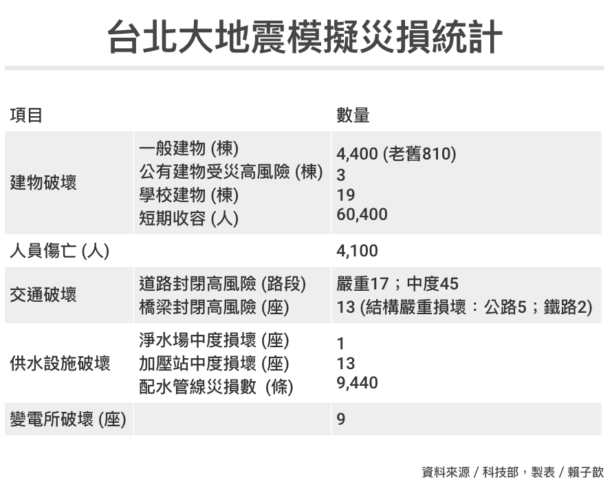

Resilient Cities
Table of Contents
1 專案內容
1.1 目標
韌性城市(Resilient Cities)一詞的主要概念係指城市經歷天然災害或環境劇烈變遷後，城市能夠快速恢復並維持原本的秩序。由於天災及氣候變遷已成常態，因此如何在本市近年積極推動的智慧城市(Smart City)概念下打造一韌性城市，是本局的重要目標之一。早期韌性城市的研究重點，著重於藉由工程技術的改善來減災(mitigation)，而本專案的重點則將著重於在數位治理(digital governance, or e-governance)的概念下，如何藉由大數據(Big Data)及人工智慧(Artificial Intelligence or AI)來建立一智慧韌性城市。
1.2 委託人工智慧發展韌性城市管理規劃
1.2.1 委託人工智慧發展韌性城市管理規劃主題需求
研究並收集韌性城市個案
- 收集相關韌性城市計畫，並探討其與台北市的異同之處。
- 整理並撰寫報告以整合各項參考資料。“
智慧城市數據研究
- 分析既有的大數據，探討並規範原則以建立與韌性城市有關之獨立小型資料集(datasets)。
- 分析小型資料集的關聯性，並規劃是否可用於建立韌性城市。
劇烈天氣及氣候變遷相關數值模式分析
- 探索相關劇烈天氣及氣候變遷相關數值模式。
- 邀請國內外專家針對劇烈天氣與韌性城市之各種數值模式進行會議討論。
分析運用人工智慧於韌性城市的可能性
- 結合相關案例，大數據及各種數值模式，訂定人工智慧應用於建立韌性城市的各項步驟及指標。
- 估計可能的軟硬體費用及時程安排，產出報告以利建立本市為智慧韌性城市。政府文件典藏規範與典藏格式之比較分析。
1.2.2 人工智慧發展韌性城市管理規劃方法及要求
焦點團體及個人訪談
應與規劃主題相關焦點團體及個人進行訪談，發掘與探究相關問題，焦點團體及個人包括下列對象，惟對象本機關得視業務需要進行調整：
- 本機關首長、主管或其指定代表。
- 本機關指定單位主管或其指定代表。
- 本機關指定之中央機關主管或其指定代表。
- 本機關指定之產業人士或府外專家學者。“
案例分析
應至少收集國內10個，國外10個與主題相關案例資料或文獻，分析其現況與發展經驗作法，探討關鍵成功因素、可參考或可修正之處，與機關目前發展及策略進行比較，以利提出未來具體可行之建議方案。
2 韌性城市之規劃方向
大至看了一下里約的經驗1，我覺得你在寫之前可以先針對這幾項主題先和台北市府確認一下1~4的正確答案(網路上是可以查到零散相關訊息，但是有些是民間團體或學術研究意見，市府也不一定認同)，然後針對這些方向提出你的韌性行動願景以及具體方案
- 確認台北城市發展課題
- 台北市預期的自然環境挑戰
- 台北市衍生性的社會衝擊
- 台北市未來願景
- 提出韌性行動回應
3 概念文獻:
3.1 韌性城市2
3.1.1 什麼是韌性城市
韌性城市是指一城市擁有足以容納、維持現今及未來社會、經濟、環境、科技發展所帶來的壓力，基礎建設規劃能在未來仍能發揮必要的功能。同時，城市必須將針對氣候變遷危機議題做規劃，並增進在基礎建設及自然環境層面的調適能力。
3.1.2 韌性城市的提出和發展:
美國辛辛那提大學Crhis Christopher Auffrey教授指出，對於韌性城市的理解，不應僅僅停留在防災減災方面，更應關註城市的健康持續發展、居民的幸福生活品質。因而，韌性城市還應包含一些關於市民日常生活的要素，例如，市民是否能接近活動場所，是否能接近好的醫療和教育設施以及是否能接觸到有機健康食品等。
在城市規劃實踐中，很多領域的工作與韌性城市相關，除了傳統觀念中的城市防災，還有城市安全與預警、應對經濟危機和人口老齡化、應對交通污染和環境變化等。
一座韌性城市是一個由物質系統和人類社區組成的可持續網路。物質系統是城市中的自然和人造環境要素，包括建成的道路、建築、基礎設施、通信和能源以及水系、土壤、地形、地質和其他自然系統。在災害中，物質系統必須能夠在極端的壓力下保存，並繼續發揮作用。如果物質系統大部分都經受了不能修複的損傷，城市的損失就會加劇且恢復緩慢。一座沒有韌性物質系統的城市在面對災害時將極度脆弱。
Crhis Christopher Auffrey強調，韌性城市的研究應該從多學科、多維度、多尺度的交叉視角出發，借鑒國際經驗進行全面探討，並儘快將研究成果轉化到城市規劃和建設實踐中去。
3.1.3 韌性城市的內涵
- 經濟韌性：具有應對外部經濟動蕩的能力，以多元經濟結構為新的發展目標。以Smart Development（新知識驅動的發展），Sustainable（可持續性）、Inclusive（包容性）；
- 社會韌性：應對社會變化的能力，社區歸屬感，通過社會整合實現自我振興的能力；
- 生態環境韌性： 具有應對外部自然災害的能力，城市空間及城市基礎設施規劃留有餘地，災害來臨後能夠自我承受、消化、調整、適應、實現再造和複蘇。
3.1.4 全球100韌性城市
*全球100韌性城市*是由美國洛克菲勒基金會於2013年5月份提出的一項城市發展項目，旨在通過為城市制定和實施韌性計劃及提供技術支持與資源，幫助世界各地城市增加韌性，應對21世紀日益頻發的自然、社會、經濟挑戰。這些挑戰並不僅限於地震、洪澇、突發疫情等衝擊，還包括動搖城市體系的日復一日或迴圈往複的壓力，如失業率居高不下等。
3.2 韌性城市重要特質3
3.2.1 韌性城市的發展是積分賽，而非淘汰賽
韌性城市應該被看作是一個動態的過程，一個城市的韌性需要時間的累積，一兩個舉世無雙，神之作品的好設計也許對推動都市韌性有幫助，卻不會是全部。韌性同時也是多元的，需要大家共同的參與與努力。以都市洪水的議題為例，韌性的推動可以表現在公共工程如滯洪公園，排水設施等，但若沒有市民共同對水議題的關注，對自身環境的準備與危機意識，發展一個都市的韌性就會相當困難。
3.2.2 韌性的發展仰賴經驗與學習
韌性城市的發展與學習力高度相關。『學習』，除了從自身過去發生的經驗中吸取養分(learning from previous experiences)，也可以由科學評估，及城市間相互比較，經驗分享所得(learning from knowledge exchanges)。這也說明了為何各城市積極參與國際性的城市聯盟，如C402，ICELI3等，藉由經驗交換與資源共享，來推動更為韌性的都市發展 。要注意的是，這裡的學習，並非完全複製他地的操作經驗，而應考慮地方特性(如環境特性，文化背景，空間治理架構，發展願景)，將他地的經驗消化學習，進而轉換為符合當地需求的策略與規範，完全的複製不僅無法確保城市變得更韌性，更可能是一場災難。
3.2.3 減緩與調適同樣重要
對面氣候變遷的不確定性，城市的減緩 (mitigation)與調適 (adaptation)行動，都是關鍵。目前台灣多半將韌性看作是調適的代名詞，這種理解方式雖然簡單，卻侷限了韌性的討論與應用。由於減緩與調適在出發點與考量面向的差異，所擬定的具體作法可能會有矛盾或衝突之處(可能會打架)。一般而言，減緩策略比較偏向是中央層級的工作範疇，而調適行動則比較容易在地方層級，甚或社區層級上實現。無論如何，持續的協調溝通，梳理各面建議並轉換成大家都相對滿意(並符合長期發展願景)的空間策略，會是韌性城市推動過程中最關鍵的一環 – 這也是空間規劃的核心價值。
3.3 100 Resilient cities
- 韌性成事好城市：從100 Resilient cities談城市發展的韌性: 在國際上，韌性城市發展的重點和脈絡是什麼呢？以下就從非營利組織『一百韌性城市(100 Resilient cities, 以下簡稱100RC) 1』來一窺其內涵。…
- 100 Resilient Cities: In 2013, The Rockefeller Foundation pioneered 100 Resilient Cities to help more cities build resilience to the physical, social, and economic challenges that are a growing part of the 21st century. … ()
3.4 resilientcitiesnetwork.org
3.5 韌性城市架構(City resilient framework)
- 健康與福利(Health & Wellbeing)
- 經濟與社會(Economy & Society，
- 基礎建設與環境(Infrastructure & Environment)，
- 領導與策略(Leadership & Strategy)
3.6 30項都市保護區實踐準則
- 在都市保護區內對所有民眾提供通行權，與接觸少數族群與弱勢團體的機會；
- 讓民眾產生地方所有權的感覺；
- 善用志工與支持團體的優勢；
- 與不同對象進行溝通；
- 展示、促進與推廣良好的環境行為；
- 展示、促進與推廣接觸大自然對於健康的益處，以及良好的飲食習慣；
- 防止亂丟垃圾；
- 犯罪預防與起訴；
- 減少人與野生動物的互動與衝突；
- 控制盜獵；
- 控制動植物入侵外來種；
- 促進都市保護區與其他自然域的連結；
- 幫助自然融入人造環境，並打破「自然」與「都市」之間的文化藩籬；
- 管控非法建物；
- 監測並管理水資源；
- 管控野火；
- 減少噪音與人造光害的衝擊，並且持續關注電磁波的研究；
- 與共享管轄權或鄰近範圍的政府機關合；
- 與具備附帶任務的機關（如縣市政府、保育警察、林務機關等）進行合作；
- 網羅支持者與盟友；
- 與大學合作，進行都市保護區管理人員的培訓；促使大學利用都市保護區進行學術研究與深度學習；
- 學習他人的合作經驗；
- 推廣與維護都市保區；
- 讓都市保護區成為國家與全球自然保育的優先項目；
- 創造與拓展都市保護區；
- 推廣尊重都市保護區與偏遠地是有差異的組織文化；
- 瞭解政治技巧是成功的關鍵，增強它們並建立政治資本；
- 從各式樣的來源中尋找資金；
- 從國際組織與交流計畫中學習優點；
- 透過研究改善都市保護區。
4 AI for the resilient city
5 韌性城市策略與做法
- 從都市規劃思維來看韌性城市
- 韌性城市大比拚 最佳做法報你知
- 韌性，城市不任性IV: 韌性城市在台灣 – 與變化共生，與知識共存
- 社企流年度專題《打造韌性城市》：城市看病記 (看裡面的SlideShare)
- 台北大學團隊整合模型 提災害對策打造韌性城市
- 極端災害下之韌性城市
- RESILIENCE STRATEGIES AND APPROACHES TO CONTAIN SYSTEMIC THREATS
- Resilience Strategies for Communities at Risk
- Real-time Resilience Strategies for Coping with Coronavirus
- Climate Resilience Strategies for Buildings in New York State
- Guide for Climate-Resilient Cities: An Urban CriticalInfrastructures Approach
- 100 Resilient Cities relaunches as an independent network
- 連興隆專欄：韌性城市的「去中心化」思維
- 極端氣候下的環境治理：為什麼我們需要景觀法
- 宜居城市如何判斷？ 5都1縣齊論生物多樣性保育
- 極端氣候衝擊 落實韌性城鄉首重社群力
- 「韌性」計畫迎戰氣候變遷 全球港灣城市大串連
- 氣候變遷新挑戰 紐國學者：傳統防洪思維行不通
- 從「不能淹水」到「不怕水淹」：換掉治水這帖無效藥吧！
- 台灣走出去，「我們」不缺席
- 聯合國專家：只有永續發展能創造「韌性」的地球
- 【城市韌性專題】 胡志明市的氣候調適計畫(上)
- 【城市韌性專題】胡志明市的氣候調適計畫(下)
- 城市低碳外交 五都表現最優
- 【城市韌性專題】全球「地方生物多樣性行動」 高雄成為第51個加盟城市
- 【城市韌性專題】全球市長發表波昂宣言 強調氣候調適應融入政策
- 【城市韌性專題】城市做氣候調適 資金調度須由下而上
- 重點不只有裝App 專家解讀台灣防災觀念：政府不能怕告訴民眾
- 洪患衝擊中國經濟 專家：製造業納入氣候韌性刻不容緩
- 你加Q了嗎？氣象專家教你這樣用APP 不被突如其來的大雨淋成落湯雞
- 從打119通報到智慧防汛 水利署全台「淹水感測器」整合上線 資料首次對外公開
- 全台蓄水率下降 卓榮泰提醒勤洗手也要節約用水
- 出席高雄治水論壇 李鴻源：打造韌性城市要「為失敗而設計」
- 廖桂賢：為什麼社子島開發計劃引發質疑？
- 廖桂賢：規劃一個生態、正義的社子島未來
- 空間翻轉×社區動員：共享之春
- 都市保護區貢獻多 定期健診國際有準則
- 【韌性城市】韌性新思維：台灣未來藍圖
- 怎樣才能成為「不怕水淹」的韌性城市？
- 台灣如何運用地圖防災？
- 極端災害下之韌性城市-行政院災害防救專家諮詢委員會
- 聯合國「2019年城市具有韌性評估報告」之摘錄
- 韌性城市大比拚 最佳做法報你知
- 從都市規劃思維來看韌性城市-新北市
- 防災地圖製作
- 地理資訊不只防災！開放街圖應用興起，挑戰Google Map地位
- Google 在台成立「Google 台灣災害應變資訊平台」，建立更完善的防災系統
- 台灣如何運用地圖防災？
- 【韌性城市】韌性新思維：台灣未來藍圖
- 打造韌性社區
- 認識韌性城市（上）
- 認識韌性城市（下）
- 韌性城市的都市想像
7 案例分析
7.1 國內
7.1.1 嘉義縣東石鄉
7.1.3 台北
7.1.4 新北
7.1.5 台南
7.1.6 屏東
7.1.7 台中
7.2 國外
7.2.1 荷蘭鹿特丹
7.2.3 威靈頓
7.2.5 舊金山
7.2.7 德國
7.2.8 澳洲
7.2.9 胡志明市
8 創意或優規
8.0.1 廠商所提供之「創意」內容，以與採購標的有關者為限。
9 各國韌性城市計畫及其與台北市之異同
9.1 任務
委託人工智慧發展韌性城市管理規劃，內容:
9.1.1 對各規劃主題目標之認知，研究並收集韌性城市個案
- 收集相關韌性城市計畫，並探討其與台北市的異同之處。
- 整理並撰寫報告以整合各項參考資料。
9.2 內容
依據跨國保險組織勞埃德保險公司倫敦總部與劍橋大學賈奇商學院風險研究中心於2015年所提出的調查報告：《2015-2025城市風險指標》 ( Lloyd’s City Risk Index 2015-2025 )，在全球301個大城市所面臨的18項災害威脅中，未來十年內【台北】是全球最脆弱城市，在此報告中，台北市面臨的前3大威脅分別是風災、地震及市場崩潰， 而台北市在10年內因事故和自然災害導致的經濟損失規模預計為1812億美元（約5兆8963億台幣），地震頻繁的東京以1532.8億美元排名第2、首爾為1035億美元排名第3，馬尼拉和紐約則分別排名第4、5名，預計經濟損失規模為1010.9億美元和903.6億美元。
台北市不僅身為我國首都，又是臺灣的政治、經濟、文化、教育、醫療、學術研究等領域的發展中心，其重要性自不言可喻，也因此，如何將台北市打造成一個具有強大生命力的韌性城市便成為當務之急。
9.2.1 全球大城市 未來10年的威脅
在「2015-2025勞合社城市危險度指數」中，全球大城市所面臨的可能威脅分別為：
1.金融市場崩盤
2.傳染病
3.風災
4.地震
5.水災
6.石油價格波動
7.網路攻擊
8.無力償還外債
9.恐怖主義
10.乾旱
11.供電不足
12.火山
13.植物病蟲害流行病
14.太陽噴出大量高能粒子與宇宙射線，透過磁場等干擾地球
15.寒害
16.熱浪
17.核電廠事故
18.海嘯
在這份風險評估調查中，台北的風災占44.78%，地震16.38%，經濟因素15.77%，風災與地震是天災，只能預防。
該份調查指出，包括金融市場危機、傳染病、風災、地震、核災等18種災害將在未來十年內讓台北損失約45％GDP，約五點八兆元，其中44.78％的預期經濟損失由風災造成，16.38％是因為地震，15.77％是因金融市場波動而生。4
其餘對台北的十大可能威脅還有水災、石油價格波動、傳染病、火山爆發、網軍攻擊、電力供應不足以及乾旱。研究指出，人為災害對台北的威脅度，居全球各大城市第四位。離台北不遠的核四廠雖已停建，但因台灣有六座運轉中的核電機組，核災可能帶來的經濟風險也高居第五位。5
9.2.2 發展智慧防災科技6
此策略主要是發展智慧防災監測技術，以強化對於災害脆弱環境的掌握，推動措施及規劃重點說明如下：
措施一：強化災害感知監測能量
此措施係以配合行政院所核定ide@ Taiwan 2020（創意臺灣）政策白皮書規劃，建構穩定不中斷且能跨領域間之整合防災監測網絡，強化防災監控網為目標。規劃執行重點包含有提供穩定、正確的防災監測資訊、研發創新感測技術、提升國土監測運作能力及結合天然災害防災體系與資訊管理系統等項目。
措施二：強化防災巨量資料處理與分析能力
此措施係以應用防災巨量資料，打造資料驅動決策的智慧防災應用為目標。規劃執行重點包含有研發巨量資料快速蒐整分析技術、提升天然災害預警能力、研發創新感測技術及利用科技分析弱點建立輻射監測智慧網等項目。
措施三：增進民眾對於防災資訊的可及性
此措施係以結合「開放資料 Open Data」、「巨量資料 Big Data」和「群眾外包 Crowd Sourcing」等資訊科技讓防災有感為目標。規劃執行重點包含有研發穩定可靠之資訊傳遞技術、建立各類防災資訊主動發佈技術及輻射監測數據資料科普化等項目。
9.2.3 台灣現有的防災評估
台灣並非沒有類似的地震模擬與災損評估，但下場大多是被放在一旁生灰塵，沒有進一步向民眾揭露並研擬對策。像是2012年國家地震工程研究中心用TELES系統推估，若大地震發生在台北，恐怕會倒4,000棟房子。災害防救科技中心也在2014年分析，如果台北腳下的山腳斷層發生錯動，恐怕會有超過2萬人死亡。這些單位進行的模擬，並沒有引起政府足夠的重視。直到3年內出現2次本應該歡天喜地的年假，台南和花蓮分別經歷了慘烈的地震災難，讓政府發現推動房屋耐震補強的急迫性，也間接意識到地震模擬與災損評估是凝聚官民共識的有力工具。別以為不可能！根據台灣地震模型團隊的資料，台北未來50年發生規模6.6地震的機率有20％。這20％一旦發生，將導致4,100人傷亡、4,400房屋毀損。這數字究竟怎麼算出來？我們又該如何搶救人命？「以前怕引起恐慌，但全台灣都有地震，你跑得掉嗎？跑不掉！這樣的情況下，我們必須與災害共存。 現在我們會告知民眾有什麼風險，告訴民眾政府會做事，但民眾自己也要做事，」行政院災害防救辦公室科長陳榮裕說明政府心態上的轉變。 7
9.3 其他城市的措施/做法
9.3.1 日本: 實際模擬並公佈可能災害影片供民眾觀看
根據日本地震調查委員會的計算，未來30年，南海發生大規模地震的機率高達8成。日本內閣府（相當於我國的行政院）於2017年發布一場逼真的模擬影片。這個模擬影片中，20XX年的冬天，日本南海發生規模9的大地震。地震瞬間，四處充滿著玻璃爆破和尖銳的剎車聲；古蹟大塊崩落、大樓攔腰坍塌；橋梁如同水草大幅波動；電塔纜線一根根繃斷；水管破裂、土壤液化讓四處泥濘不勘。半小時後，海嘯逼近、衝擊堤防，淹過大街小巷，路旁的汽車如葉片漂流，海嘯警報和汽車防盜器的刺耳聲交錯不斷。8
日本政府徹底公布資訊，製作逼真的動畫，就是希望老百姓隨時把皮繃緊因應天災；同樣天災頻仍的台灣，卻對公布資訊有很多顧慮。一方面擔心影響投資、房價，另方面也害怕因應對策還沒出爐，會被媒體和監督力量拿來大作文章。也因此，即便有類似的模擬，政府卻不願主動向民眾公開。8
像是2012年國家地震工程研究中心用TELES系統推估，若大地震發生在台北，恐怕會倒4,000棟房子。災害防救科技中心也在2014年分析，如果台北腳下的山腳斷層發生錯動，恐怕會有超過2萬人死亡。8
這些單位進行的模擬，並沒有引起政府足夠的重視。直到3年內出現2次本應該歡天喜地的年假，台南和花蓮分別經歷了慘烈的地震災難，讓政府發現推動房屋耐震補強的急迫性，也間接意識到地震模擬與災損評估是凝聚官民共識的有力工具。8
數百年來，台北沒有經歷過位於都會區下方的「直下型地震」。相較於台灣其他的活動斷層，山腳斷層在50年內發生規模大於6.6地震的機率為20％。20％說高不高，然而，大台北地區人口超過800萬，又有將近7成的老舊建物，外加政府機關、許多企業的總公司都聚集在此。種種原因，都讓這個不起眼的20％，成為大台北無法承受的風險。如果山腳斷層錯動，引發規模6.6地震，估計會有以下災損：

Figure 1: 台北大地震模擬災害統計
日本的因應對策，細緻到計算出每項對策的效果。以「東海、東南海、南海地震對策」來說，現在評估的死亡人數為9,200人，目標是在10年內將傷亡人數減半。具體作法是，住宅的耐震化，可以減少3,500人死亡；海嘯避難知識的提升，可以減少700人死亡；住宅防火功能改善，可以減少300人死亡⋯⋯將防災對策效果量化，也可以突破過往官方民間都抱持的「防災花那麼多錢，又看不到成效」的盲點。8
「如果台北發生大地震」，這份殘酷模擬考卷的結果已經出爐。雖然大台北的結果是通篇紅字，但幸好只是模擬，我們還有時間調整體質、面對實戰。否則，這些「早知道」又有何用？8